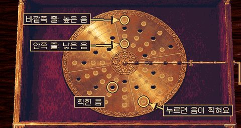
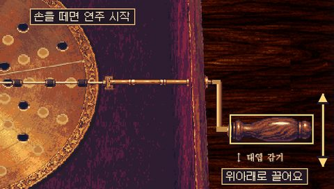
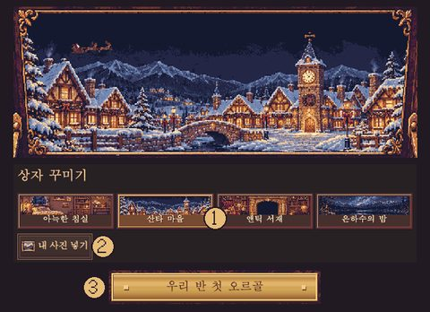

mbworkroom-75288.web.app 에 들어가 순서대로 해 보세요. 화면 위 '사용 방법' 버튼을 누르면 자세한 안내가 나와요.

1음 찍기
원판의 동그라미를 누르면 음이 찍혀요.
안쪽은 낮은 음, 바깥쪽은 높은 음이에요.

2태엽 감고 듣기
나무 손잡이를 위아래로 끌었다가 놓으면 연주가 시작돼요.

3상자 꾸미기
뚜껑 속 풍경을 고르거나 내가 그린 그림을 넣어요.
4공유하기
링크를 복사해 친구에게 보내면 친구가 내 오르골을 들을 수 있어요.
정답은 없어요. 떠오르는 대로 자유롭게 적어 보세요.
처음이라면 4음과 짧은 원판이 쉬워요. 음이 많을수록 다양한 가락을 만들 수 있어요.
내 음악과 어울리는 풍경을 아래 칸 안에 꽉 채워 그려요. 이 칸은 오르골 뚜껑 속 풍경과 같은 모양(가로 8 : 세로 3)이에요.
친구가 보내 준 링크를 열고 태엽을 감아 들어 보세요. 들은 느낌과 좋았던 점을 적어 친구에게 알려 주세요.
| 친구 이름 | 작품 제목 | 들은 느낌 | 좋았던 점 한 가지 |
|---|---|---|---|
| 신나는 · 잔잔한 · 신비로운 · ( ) | |||
| 신나는 · 잔잔한 · 신비로운 · ( ) | |||
| 신나는 · 잔잔한 · 신비로운 · ( ) | |||
| 신나는 · 잔잔한 · 신비로운 · ( ) |